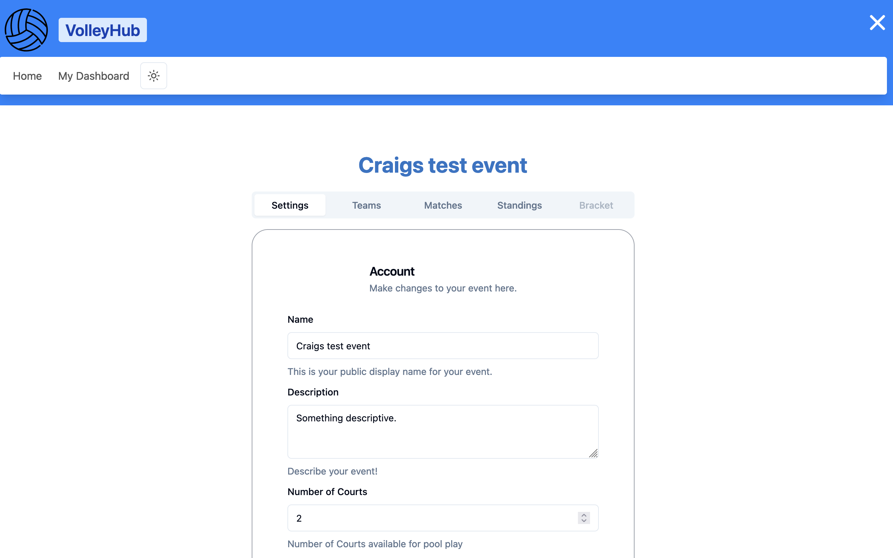

<link href="https://cdn.jsdelivr.net/npm/bootstrap@5.0.2/dist/css/bootstrap.min.css" rel="stylesheet" integrity="sha384-EVSTQN3/azprG1Anm3QDgpJLIm9Nao0Yz1ztcQTwFspd3yD65VohhpuuCOmLASjC" crossorigin="anonymous">
<script src="https://cdn.jsdelivr.net/npm/bootstrap@5.0.2/dist/js/bootstrap.bundle.min.js" integrity="sha384-MrcW6ZMFYlzcLA8Nl+NtUVF0sA7MsXsP1UyJoMp4YLEuNSfAP+JcXn/tWtIaxVXM" crossorigin="anonymous"></script>

<article class="container mt-5">
	<h1 class="display-4 mb-4 text-primary">
		SvelteKit (SvelteJS 5) + Supabase + Vercel
	</h1>

	<p class="lead">
		The problem: I regularly attend volleyball tournaments hosted around the Buffalo area. Often times at these events, there is a great amount of effort that goes into creating a balanced "round robin" schedule and keeping teams on this schedule.
	</p>

	<p>
		Regularly the schedules are handmade and often teams end up playing consecutive games in a row or sitting for far too long, resulting in grumbling and general dissatisfaction.
	</p>

	<h2 class="h2 mt-5 mb-3 text-secondary">
		The Format
	</h2>

	<p>
		Typically, tournaments follow this format:
	</p>

	<ol class="list-group list-group-numbered mb-4">
		<li class="list-group-item">
			Play X games of <code>pool</code> play -- This is for seeding before going into playoffs.
		</li>
		<li class="list-group-item">
			During pool play, teams are expected to ref other teams' matches (this means refs need to be pulled from teams not playing).
		</li>
		<li class="list-group-item">
			Teams should ref the same amount of games where possible.
		</li>
		<li class="list-group-item">
			Teams should sit in between games logical amounts.
		</li>
	</ol>

	<h2 class="h2 mt-5 mb-3 text-secondary">
		The Challenges
	</h2>

	<p>
		The problems with creating a schedule by hand are that teams often end up playing multiple games in a row or sitting for too many. Teams are often slow to realize when they should be on the court and even more so when they should be ref'ing.
	</p>

	<p>
		I knew I wanted to build something for fun and learning using SvelteKit and Supabase, so this is the problem that I chose to tackle (I know scheduling tournaments is a solved problem)!
	</p>
    

</article>
